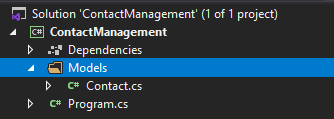

You'll need to store data at some point of your application. When you do, you'll need to use a persistence database framework. You could write it on your own or you could
use an existing one. If you're a beginner developer like me, why would you bother yourself re-inventing the wheel. Just use what is best out there. The best database framework for C# is Entity Framework.
Thanks to Entity Framework, we no longer need to manage database connections, manual mapping, stored procedures and things like those. Entity Framework would take care all of them for us.
Different Approaches in Entity Framework
There are three approaches in Entity Framework.
Code First Approach: We create our domain classes and Entity Framework generates the data tables accordingly.
Database First Approach: We create our data tables and Entity Framework generates the domain classess accordingly.
Model First Approach: We create models and their assosications and Entity Framework generates the data tables and domain classes accordingly.
If you developed some applications using Django Framework. You'd knew about the code first approach. I'm familiar with the code first concept so I'd stick to it. If you'd like to learn more about other
approaches, there are many resources online. For the rest of the post, I'll talk about the code first approach.
Create Domain Class
Let's create a simple contact management app. Let's make it console application for now. Go ahead and create the project.
Once you created the project, go ahead and and create a folder named Models. Later, add Contact.cs class to that folder. Final folder structure should be as follow:

Project Structure
Let's modify the Contact.cs file as follow.
{% highlight c# %}
using System;
using System.Collections.Generic;
using System.Text;
namespace ContactManagement.Models
{
public class Contact
{
public int Id { get; set; }
public string Name { get; set; }
public string PhoneNumber { get; set; }
public string Email { get; set; }
public string Address { get; set; }
public string CompanyName { get; set; }
public string Website { get; set; }
}
}
{% endhighlight %}
As you can see, we have all the properties that we want in our database. Since we're using code first approach, Entity Framework will help us to convert these properties into database columns.
Create Entity Framework Project
I've been looking at Entity Framework codes on Github and I believe the best approach is to seperate the domain classes and Entity Framework setup than each other. That's why I'm going to create a new project just for Entity Framework
setup.
Once we created our ContactManagement.EntityFramework project - which is a Class Library (.Net Core) - we need to install Entity Framework as dependency.
We need to follow below steps to do so.
Right click on the Dependencies under the project and click on the Manage Nuget Packages.
Go ahead and Browse the available packages and search for Entity Framework Core.
Select the package with the name Microsoft.EntityFrameworkCore and install the latest version.
There are two versions of Entity Framework. One is EntityFramework and the other one is EntityFrameworkCore. Since we're working on .Net Core, we installed EntityFrameworkCore.
If you are working on .Net Framework than you need to install EntityFramework otherwise you'll get errors.
Let's add a new class named ContactManagementDbContext and modify it as follow.
{% highlight c# %}
using ContactManagement.Models;
using Microsoft.EntityFrameworkCore;
using System;
using System.Collections.Generic;
using System.Text;
namespace ContactManagement.EntityFramework
{
public class ContactManagementDbContext : DbContext
{
public DbSet Contacts { get; set; }
protected override void OnConfiguring(DbContextOptionsBuilder optionsBuilder)
{
optionsBuilder.UseSqlServer("Server=(localdb)\\MSSQLLocalDB;Database=ContactManagementDB;Trusted_Connection=True;");
base.OnConfiguring(optionsBuilder);
}
}
}
{% endhighlight %}
The above code uses .UseSqlServer method. To be able to use it you have to install EntityFrameworkCore.SqlServer package through Nuget Package Manager.
We need EntityFrameworkCore.Tools package to make the migrations so go ahead and install it as well.
Once you installed the EntityFrameworkCore.Tools package, you're good to go. Let's open the package manager console and create the initial migration by typing add-migration initial.
I'd like to name my first migrations as initial. You can choose whatever the name you'd like.
If you were able to add the migrations then you should update the database by typing update-database on the package manager console. If you run this code
for the first time it'll create the database for you. Go ahead and check your database, you'll see the Contact table as expected.
If your connection string in ContactManagementDbContext.cs was incorrect, update-database command wouldn't run. You can always check your connection string through View > SQL Server Object Explorer.
Conclusion
We created a sample solution. We created a project for the domain class and another one for the Entity Framework setup. I'll create data services to demonstrate CRUD operations in the next posts.